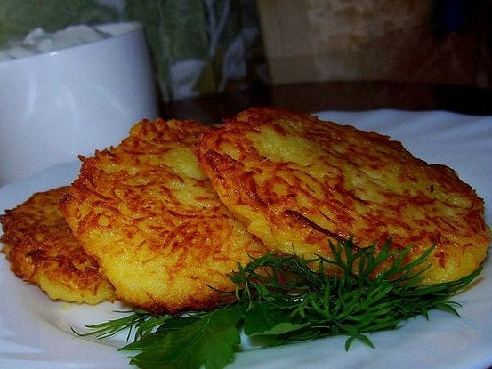

Рецепт белорусских драников
ИНГРЕДИЕНТЫ
- Картофель
- Лук
- Куриное яйцо
- Пшеничная мука
- Молотый черный перец
- Соль
- Растительное масло
ИНСТРУКЦИЯ ПРИГОТОВЛЕНИЯ
- Картофель необходимо в сыром виде очистить от кожуры, тщательно вымыть и натереть на мелкой терке. Для измельчения картофеля можно также воспользоваться блендером или перекрутить его через мясорубку. Аналогично нужно измельчить репчатый лук и добавить его к картофелю. В луково-картофельную смесь для связки добавляется сырое яйцо, а также специи по вкусу (в основном, черный молотый перец и соль) и мука. Тесто для драников тщательно замешивается до однородности.
- Сковорода с раскаленным маслом уже ожидает драников, поэтому с этого момента начинается сам процесс жарки. Тесто для драников нужно аккуратно, при помощи столовой ложки, выкладывать на сковородку в виде блинчиков. Размер драников зависит от предпочтений хозяйки. Они могут быть большими, тогда их в дальнейшем можно будет скрутить с разнообразной начинкой, трансформируя обыкновенные драники в фаршированную вкуснотищу. Драники могут быть и совсем маленькими, тогда их будет удобно подавать на небольших тарелках, к тому же, они наверняка понравятся малышам.
- Обжариваются драники на среднем огне с двух сторон до появления красивой румяной корочки, после чего сковородка накрывается крышкой, а блинчики прожариваются еще приблизительно три минуты на маленьком огне.

Приятного аппетита!